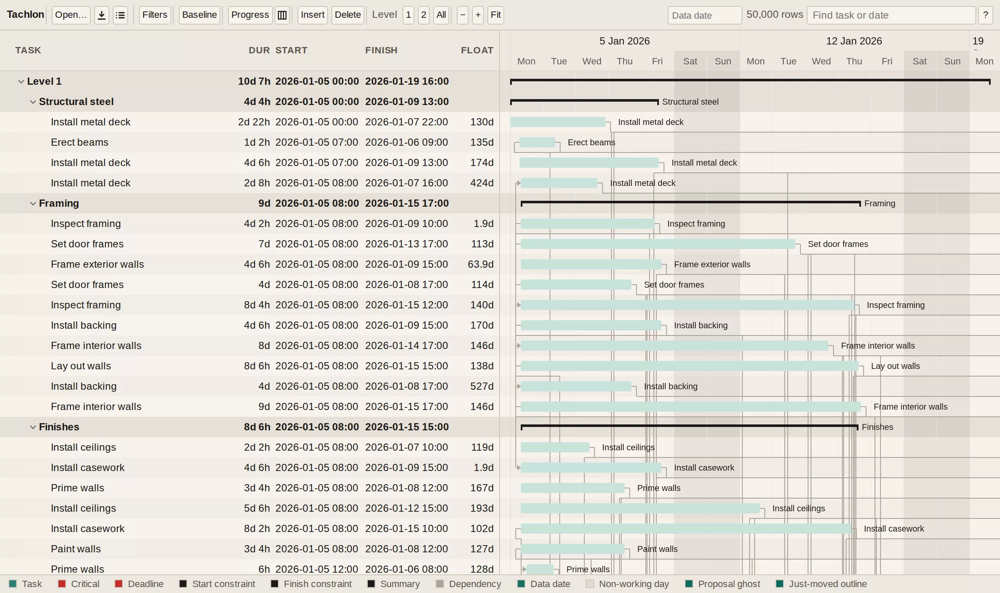

Fast at scale
50,000 tasks open in about 0.3 seconds
Hospitals, airports and power plants are scheduled in 10,000 to 50,000 activities. Tachlon is built and measured at that size.
0.3 sto open 50,000 tasks, with the schedule calculated
0.019 sslowest frame while scrolling 50,000 tasks. DHTMLX: 0.035 s
2.5×faster than DHTMLX on a 50,000-task chain: 0.31 s against 0.79 s
- A 50,000-task schedule scrolls, zooms and replans as smoothly as a 50-task one.
- Open the demo, click the chart and press
sto see the open time and frame times on your own machine.
Medians from our run of 2026-11-05 on a Mac mini, Apple M4. See the full table, including the rows where DHTMLX is ahead.
